26/03/2015 — Đây có phải hội chứng Brugada/hình ảnh điện tâm đồ Brugada típ 2?
Bản dịch tiếng Việt của bài "Is this Type 2 Brugada syndrome/ECG pattern?" – Dr. Smith’s ECG Blog. Giữ nguyên toàn bộ 14 hình ảnh của bản gốc.
Giới thiệu
Brugada típ 2 và típ 3 đã được gộp lại thành típ 2. Nhiều năm nay các chẩn đoán này vẫn gây bối rối, vì chúng dựa trên hình thái “yên ngựa” (saddleback). Tuy nhiên, hình thái yên ngựa là một biến thể bình thường rất thường gặp: hình thái “yên ngựa” hiếm khi là hình ảnh Brugada, và càng hiếm hơn nữa mới là hội chứng Brugada.
Để xem phần cập nhật quan trọng cho bài này, hãy vào đây:
Non-Vagal Syncope and Saddleback Morphology in V2 (Ngất không do phản xạ phế vị và hình thái yên ngựa ở V2)
Bài này cho thấy quyết định cấy máy khử rung tim khó khăn đến mức nào.
Ca 1
Một vận động viên trẻ đến viện vì ngất. Đây là điện tâm đồ của anh ấy:

Đây là hình ảnh Brugada típ 2 hay típ 3?
Hội chứng Brugada là một bệnh lý có thể dẫn tới nhịp nhanh thất đa dạng, rung thất và đột tử. Nhận diện được bệnh trước khi bệnh nhân tử vong là điều quan trọng.
Chẩn đoán hội chứng Brugada đòi hỏi CẢ HAI: 1) hình ảnh Brugada trên điện tâm đồ và 2) tiêu chuẩn lâm sàng.
Việc nhận diện và xử trí hình ảnh Brugada típ 1 trên điện tâm đồ không hoàn toàn đơn giản, nhưng theo tôi, nó dễ hơn nhiều so với việc nhận diện và xử trí bệnh nhân có thể bị Brugada típ 2/3 (hình thái típ 3 nay đã được nhập vào típ 2). Ở đây, một trong hai anh em Brugada trình bày sơ lược cách xử trí trường hợp có thể bị hội chứng Brugada, nhưng không bàn về típ 2 đủ chi tiết để tôi hiểu được.
Nhiều bài báo và trang web chỉ đơn giản nói rằng hình ảnh Brugada típ 2 có dạng “yên ngựa” ở V2. Họ không bàn gì thêm. Điều này không hữu ích, vì hình yên ngựa là một dạng rất thường gặp ở V2 (tới 7% ở bệnh nhân không có bệnh tim rõ ràng) và trong đại đa số trường hợp là biến thể bình thường, đặc biệt ở vận động viên.
Hình yên ngựa được gọi như vậy là do có sóng r’ (rSr’) đi kèm sóng T dương, tạo thành hình cái yên ngựa. Dạng này còn được gọi là chậm dẫn truyền thất phải, và nếu QRS đủ rộng (nhưng không quá 120 ms) thì đó là blốc nhánh phải không hoàn toàn (I-RBBB).
Một bác sĩ không chuyên về điện sinh lý làm thế nào để nghi ngờ Brugada típ 2?
Một lần nữa, phải phân biệt giữa hội chứng và hình thái trên điện tâm đồ. Riêng hình thái thì chưa đủ để chẩn đoán. Phải có thêm bối cảnh lâm sàng phù hợp (xem bên dưới) hoặc thăm dò điện sinh lý dương tính.
Làm thế nào để nhận diện hình thái Brugada típ 2 trên điện tâm đồ? May mắn là đã có một bài báo đồng thuận về chủ đề này do Bayes de Luna và anh em nhà Brugada viết. Đây là toàn văn của bài báo.
Còn có một bài báo rất hay (link toàn văn dạng html): Differential diagnosis of rSr’ pattern in Leads V1-V2: Comprehensive Review and Proposed Algorithm. (Chẩn đoán phân biệt dạng rSr’ ở các chuyển đạo V1-V2: tổng quan toàn diện và đề xuất thuật toán). Bài này do chính các tác giả của bộ tiêu chuẩn mới cho Brugada típ 2 viết, nên khá có thẩm quyền. (Đây là link tới toàn văn dạng pdf).
Dưới đây là chẩn đoán phân biệt của rSr’, có chỉnh sửa từ bài báo về rSr’:
A. Các dạng lành tính: –r’ được ghi nhanh (hẹp), khác với RBBB hay Brugada, vốn đều có R’ rộng hơn. Nguyên nhân:
1. Đặt điện cực V1, V2 cao hơn vị trí chuẩn
2. Biến thể bình thường, do vùng sau-đáy thất trái được hoạt hóa muộn
3. Blốc nhánh phải không hoàn toàn, do dẫn truyền qua nhánh phải bị chậm. Không liên quan đến kết cục bất lợi. Tuy nhiên, tỷ lệ tiến triển thành RBBB hoàn toàn về sau cao hơn.
4. Vận động viên: 35-50%, do thất phải lớn sinh lý
5. Lồng ngực lõm (pectus excavatum), do thay đổi vị trí của tim trong lồng ngực
B. Các dạng bệnh lý: –r’ thường cao hơn –r, với nhánh lên/nhánh xuống chậm hơn
1. Hình ảnh Brugada típ 2
2. Thất phải lớn, phì đại do nhiều bệnh lý khác nhau
3. Loạn sản thất phải gây loạn nhịp (ARVD)
4. Hội chứng Wolff-Parkinson-White (WPW)
6. Thuốc chẹn kênh natri (Na) (thuốc chống loạn nhịp, thuốc chống trầm cảm ba vòng (TCA))
Hãy quay lại ca bệnh của chúng ta, với nhiều chi tiết hơn:
Một vận động viên trẻ có một tình trạng gây đau nên được khám tại khoa cấp cứu (ED). Sau một cơn đau, anh bị một cơn ngất với mất ý thức hoàn toàn và mất trương lực tư thế, rồi tự tỉnh lại. Có tiền triệu dường như mang tính chất phản xạ phế vị (vasovagal). Anh bắt đầu thấy khó chịu và cảm giác đè nặng ở bụng dưới, kèm vã mồ hôi, rồi bắt đầu thấy choáng váng và ngất đi. Anh tự hồi phục ý thức. Anh không có tiền sử các cơn ngất trước đây. Không có tiền sử gia đình ngừng tim đột ngột sớm ở người thân bậc một. Không có tiền sử ngất khi gắng sức hay ngất sau gắng sức. Khám tại khoa cấp cứu bình thường.
Đây lại là điện tâm đồ đó:

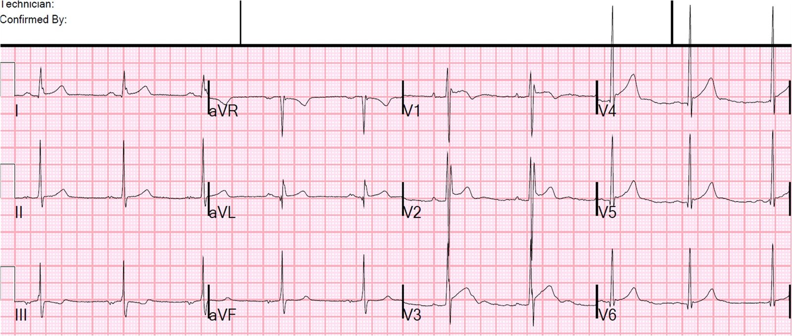
Câu trả lời ngắn gọn là KHÔNG.
1. Đây không phải Brugada típ 1.
2. Đoạn khởi đầu/nhánh xuống của đoạn ST ở V1 và V2 không đủ phẳng (góc “beta” không đủ rộng) để là Brugada típ 2. Một sóng r’ rõ nét là hình ảnh thường gặp ở vận động viên.
Đây là câu trả lời dài
Dưới đây tôi tóm tắt bài báo đã nhắc ở trên, có tựa đề (kèm link toàn văn): Current electrocardiographic criteria for diagnosis of Brugada pattern: a consensus report (Tiêu chuẩn điện tâm đồ hiện hành để chẩn đoán hình ảnh Brugada: báo cáo đồng thuận)
Chẩn đoán hội chứng Brugada đòi hỏi cả hai:
1. Điện tâm đồ có hình ảnh Brugada (hoặc Brugada típ 1, hoặc Brugada típ 2 mới được định nghĩa)
Các dấu hiệu có thể thay đổi động và đôi khi bị che lấp; các dấu hiệu có thể chỉ được thấy trong một số hoàn cảnh nhất định như sốt, nhiễm độc, rối loạn điện giải, có mặt các thuốc/chất chẹn kênh natri, hoặc kích thích phế vị.
2. Ít nhất một trong các tiêu chí sau:
(a) sống sót sau ngừng tim,
(b) nhịp nhanh thất (VT) đa dạng được chứng kiến/ghi lại,
(c) tiền sử ngất không do phản xạ phế vị,
(d) tiền sử gia đình có người đột tử khi dưới 45 tuổi mà không có hội chứng vành
cấp
(e) hình ảnh Brugada típ 1 ở người thân.
Hình thái típ 1
Đây là hình ảnh típ 1 ở V1 và/hoặc V2, khá dễ nhận ra:

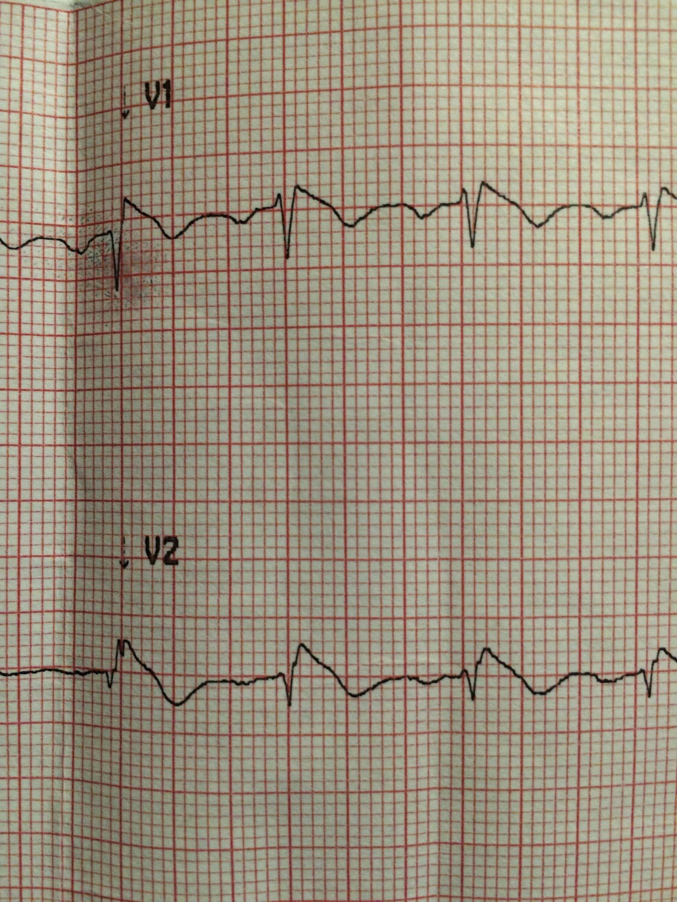
Tiêu chuẩn của hình thái típ 1:
1. Sóng R’ ít nhất 2 mm ở V1 hoặc V2
2. Nhưng không có sóng R’ tách biệt vì đoạn ST khởi đầu theo một góc ngay từ đỉnh
3. Đoạn ST lồi lên trên (“dạng vòm”, coved). [Họ dùng thuật ngữ “lõm xuống dưới”]
4. Đỉnh ở điểm khởi đầu cao không trùng với điểm J. Nó nằm TRƯỚC điểm J, khi đo ở các chuyển đạo khác (như chuyển đạo II chạy dọc phía dưới).
5. Đoạn ST dốc xuống từ từ sao cho tại 40 ms sau điểm khởi đầu, biên độ giảm ít hơn 4 mm (trong ví dụ này, ít hơn 1 mm). Trong RBBB thông thường, biên độ giảm nhiều hơn hẳn (xem ví dụ này).
6. Theo sau đoạn ST là một sóng T âm đối xứng
7. “Thời gian QRS dài hơn so với trong RBBB,” và “có sự bất tương xứng giữa V1 và V6.” Tiêu chuẩn này gây khó hiểu và không được giải thích rõ.
8. Độ dốc xuống phải sao cho chỉ số Corrado lớn hơn 1,0 (xem ví dụ ở trên).
Chỉ số Corrado là tỷ số:
[ST chênh lên tại điểm J]
chia cho
[ST chênh lên tại 80 ms sau điểm J].
Ở vận động viên, chỉ số này nhỏ hơn 1,0 do đoạn ST chênh lên nằm ngang hoặc dốc lên, như ở đây:

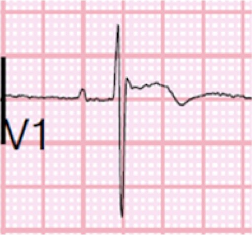
Tiêu chuẩn của Brugada típ 2:
Trong bài báo đồng thuận mà chúng ta đang bàn ở đây, Brugada típ 2 và típ 3 đã được gộp thành một típ gọi là típ 2. Họ nêu rõ các tiêu chuẩn cần dùng (bên dưới).
Đây là một ví dụ từ bài báo:

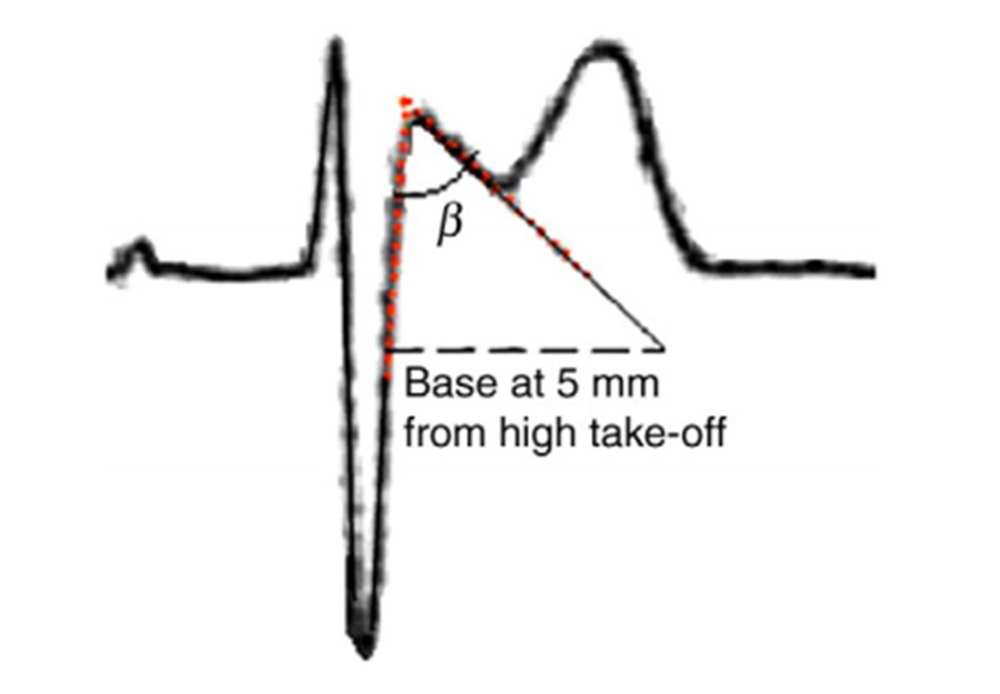
Trước hết, phải có:
a) Phức bộ RSr’ với hình yên ngựa (saddleback) điển hình ở V1 và/hoặc V2.
b) V1 có thể có sóng T dương, dẹt hoặc đảo ngược (trong ca của chúng ta ở trên, sóng T đảo ngược).
c) Sóng T ở V2 thường, nhưng không phải luôn luôn, dương.
d) Đoạn ST đi lên tối thiểu 0,5 mm. Không thể có hình yên ngựa nếu không có đoạn đi lên.
Khi đã thỏa các điều trên, ở chuyển đạo V2 cần có:
1. Điểm khởi đầu cao của nhánh xuống của sóng r’ cao ít nhất 2 mm trên đường đẳng điện (trong ca của chúng ta, lớn hơn 2 mm). Do đó sóng r’ không tách biệt như trong các nguyên nhân lành tính của rSr’
2. Bất tương xứng về thời gian QRS giữa chuyển đạo V1 và V6 (dài hơn ở chuyển đạo V1). Điều này giúp phân biệt với RBBB, trong đó thời gian QRS ở V1 và V6 bằng nhau.
3. Giống như típ 1, đỉnh sóng r’ không trùng với điểm J ở các chuyển đạo khác.
4. Đáy của tam giác được vẽ phải dài hơn 3,5 mm. Điều này xác nhận rằng độ dốc của đoạn ST đủ phẳng để chẩn đoán. Tôi giải thích điều này trong một hình có chú thích ở đây:

2. Vẽ một đường ngang thấp hơn đường này 5 mm (đường xanh lá 2)
3. Kéo dài đoạn r’-ST dốc xuống (đường đen 3) cho đến khi cắt đường xanh lá
4. Đo đáy. Nếu lớn hơn 3,5 mm thì đạt tiêu chuẩn (tương đương với góc beta (β) 35 độ)
Tôi đã làm điều này với chuyển đạo V1 trên điện tâm đồ của chúng ta:

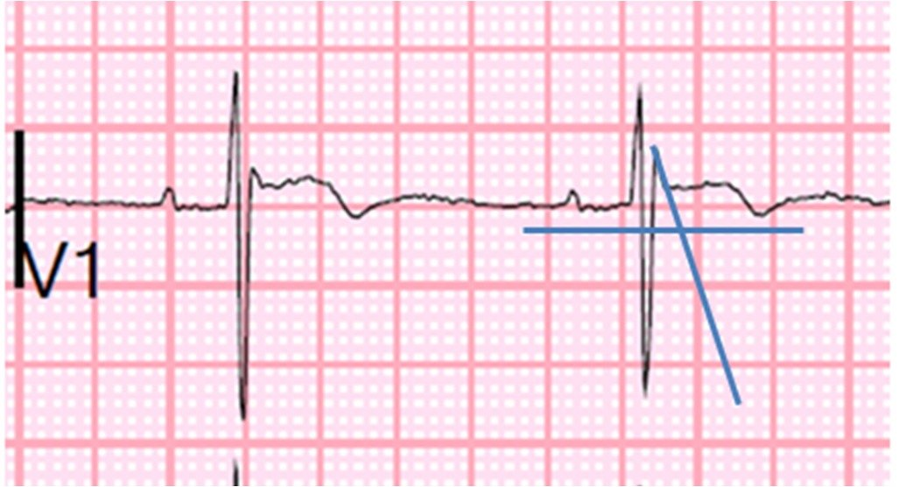
Còn ở chuyển đạo V2 thì sao?

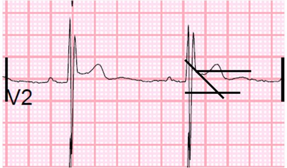
Dữ liệu cho tiêu chuẩn này đến từ nghiên cứu này, so sánh những bệnh nhân đã biết có hội chứng Brugada típ 2 nguy cơ cao với các vận động viên có rSr’. Có thể xem toàn văn tại đây.
Các tiêu chuẩn này, khi được nghiên cứu trên các quần thể so sánh này, có độ nhạy khoảng 90% và độ đặc hiệu khoảng 90% trong nghiên cứu này.
Diễn tiến ca bệnh:
Điện tâm đồ này được ghi sau đó:

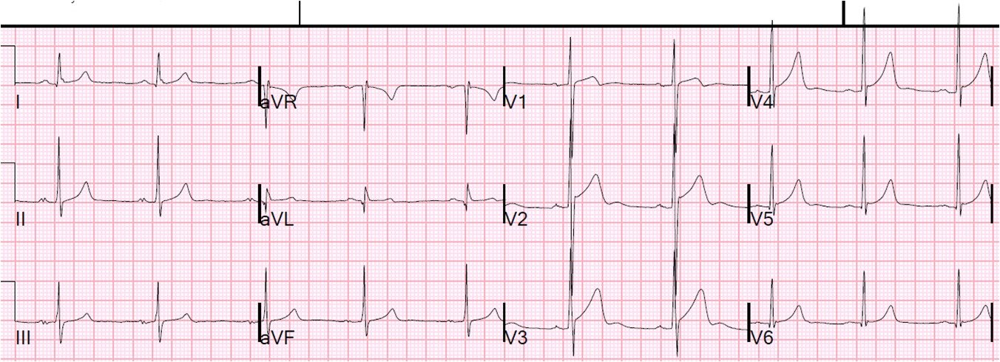
Một bài báo khác cho thấy những người khỏe mạnh có thể có hình thái típ 2 dương tính giả nếu đặt điện cực quá cao, nhưng KHÔNG có típ 1 (link toàn văn)! (Chung EH. Brugada-type patterns are easily observed in high precordial lead ECGs in collegiate athletes (Hình ảnh kiểu Brugada dễ dàng quan sát được trên điện tâm đồ đặt chuyển đạo trước tim cao ở vận động viên đại học). Journal of Electrocardiology 47 (2014) 1–6.)
Điều này đã được thực hiện ở đây:

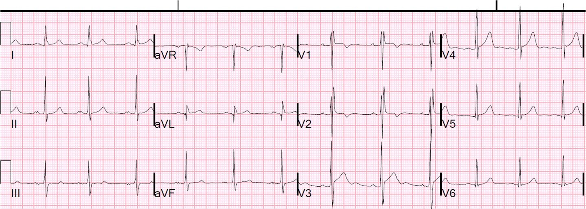
Bản ghi này cũng gợi ý rằng điện tâm đồ ban đầu đã được ghi quá cao, vì nó rất giống với điện tâm đồ đầu tiên đó
Vì anh là vận động viên đại học, các căn nguyên khác của cơn ngất cũng đã được cân nhắc, bao gồm HOCM, nhịp nhanh thất đa dạng do catecholamine và loạn sản thất phải gây loạn nhịp. Siêu âm tim qua thành ngực không cho thấy bằng chứng nào của HOCM hay loạn sản thất phải. EF bình thường. Anh không có tiền sử gia đình đã biết về đột tử do tim ở tuổi trẻ.
Bác sĩ điện sinh lý tin chắc rằng đây không phải Brugada; có thể làm nghiệm pháp kích thích bằng procainamide, nhưng thông thường nghiệm pháp này chỉ làm cho ngất “không giải thích được”, chứ không làm cho ngất do phản xạ phế vị điển hình. Bệnh nhân được xuất viện mà không bị hạn chế vận động. Bác sĩ để ngỏ khả năng làm nghiệm pháp gắng sức để loại trừ nhịp nhanh thất đa dạng do catecholamine (CPVT), vốn xảy ra khi stress và gắng sức. Tuy nhiên, khi không có yếu tố gắng sức, xác suất CPVT là rất thấp.
Kết luận ca bệnh
Thực ra, điện tâm đồ này hoặc là:
1) một hình ảnh giả Brugada típ 2 điển hình ở vận động viên, hoặc
2) một bản ghi đặt điện cực quá cao, hoặc
3) CẢ HAI.
Ca 2
Đây là một bệnh nhân đến khám vì tiền ngất tái diễn và hồi hộp đánh trống ngực.

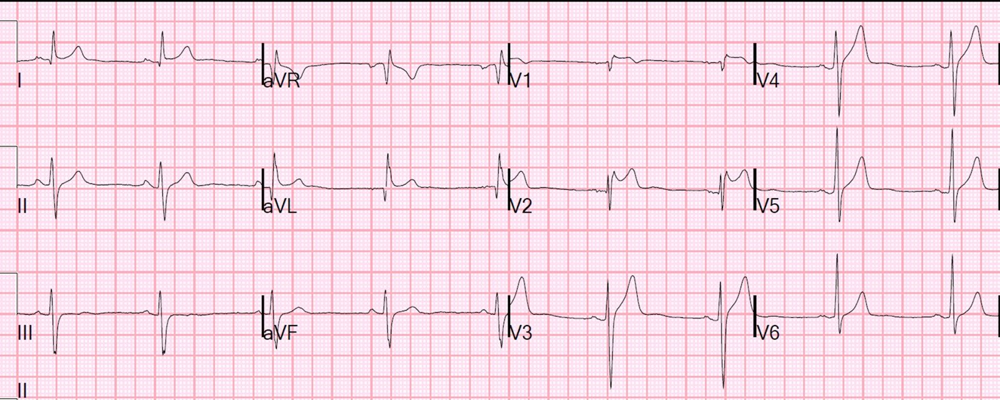
Đây là chuyển đạo V2 phóng to:

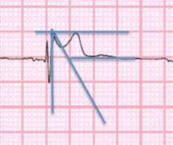
Bác sĩ điện sinh lý lo ngại về Brugada típ 2 đến mức đã cấy cho bệnh nhân một máy ghi vòng lặp (loop recorder).
Ca 3
Bệnh nhân 40 mấy tuổi này đến khám vì choáng váng và đau ngực. Cảm giác choáng váng có vẻ là chóng mặt (vertigo) hơn là tiền ngất.

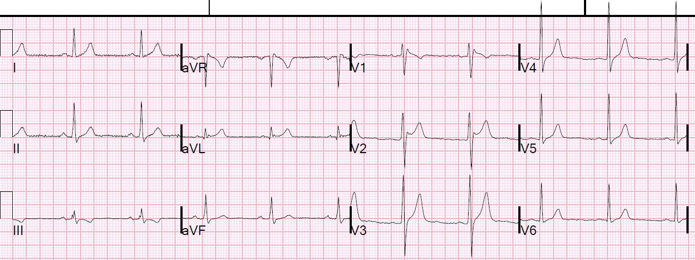
Đây là các đường đã vẽ:

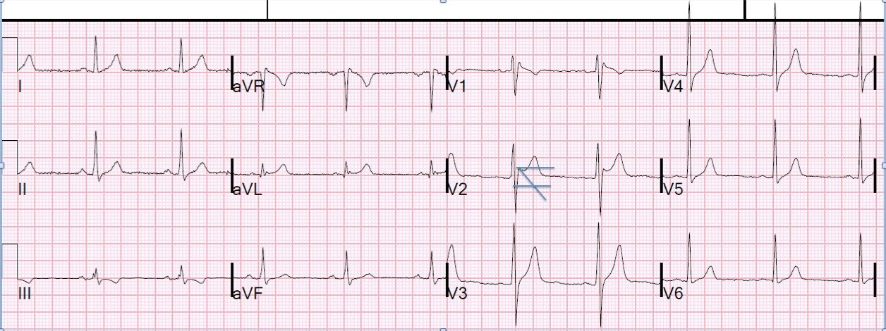
Trong ca này, bệnh nhân được làm nghiệm pháp gắng sức vì đau ngực, nhưng chẩn đoán Brugada típ 2 bị gạt bỏ vì không có tiêu chuẩn lâm sàng. Choáng váng do chóng mặt (vertigo) là không đủ.
Có hình ảnh Brugada, nhưng không có hội chứng Brugada
Đây là một bài tổng quan toàn diện về các rối loạn nhịp di truyền: Executive summary: HRS/EHRA/APHRS expert consensus statement on the diagnosis and management of patients with inherited primary arrhythmia syndromes (Tóm tắt: tuyên bố đồng thuận của chuyên gia HRS/EHRA/APHRS về chẩn đoán và xử trí bệnh nhân có các hội chứng rối loạn nhịp nguyên phát di truyền)